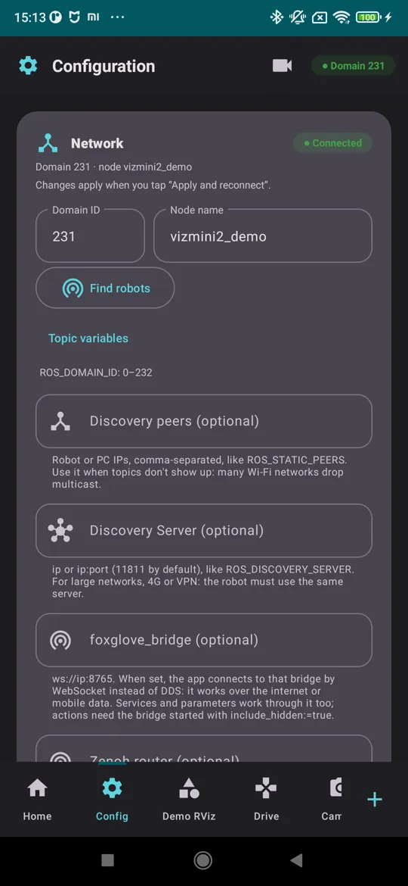

Network
Config → Network. Changes take effect when you tap Apply and reconnect.

- Domain ID
0–232, like
ROS_DOMAIN_ID. It must match the robot’s. Default 0. Find robots, next to it, listens on every domain for a few seconds and lists the ones with nodes and their IPs: tap one to connect to it.- Node name
The name of the app’s node on the network (
vizmini2by default). Letters, digits and_; it can’t start with a digit.- Discovery peers (optional)
IPv4 addresses of the robot or the computer, separated by commas, like
ROS_STATIC_PEERS. Use them when the Wi-Fi drops multicast traffic and the robot doesn’t show up.- Discovery Server (optional)
iporip:port(11811 by default), likeROS_DISCOVERY_SERVER. For large networks, 4G or VPNs. The robot must use the same server.- foxglove_bridge (optional)
ws://ip:8765. When set, the app connects to a foxglove_bridge running on the robot by WebSocket instead of DDS. It works across routers, over the internet or mobile data and with any ROS 2 middleware (Fast DDS, Cyclone DDS, Zenoh…), since the bridge does the ROS side. Start it on the robot withros2 launch foxglove_bridge foxglove_bridge_launch.xml. Topics, TF, the 3D view, cameras, plots and indicators work the same, and teleop, buttons and sliders publish through it. Services and parameters are called through it too (the Services and Parameters tabs, service buttons). Actions also work if the bridge is started withinclude_hidden:=true, since they use hidden topics and services. The node list, the node graph and lifecycle come from the bridge’s connection graph. The top bar shows Bridge instead of the domain.- Zenoh router (optional)
tcp/ip:7447(udp/,tls/andquic/endpoints work too). For robots that use Zenoh (rmw_zenoh_cpp) instead of DDS: the app connects to the robot’s Zenoh router, the one started withros2 run rmw_zenoh_cpp rmw_zenohd, and works as one more node. Everything works as with DDS: topics, TF, the 3D view, cameras, plots, teleop, buttons and sliders, services, parameters, actions, lifecycle and the node list and graph. Topics published once for those who come later (/tf_static,/map,/robot_description) also arrive. Since it goes over TCP, it also works across routers or through a VPN, as long as the phone reaches the router’s port. Use either this or foxglove_bridge, not both. The top bar shows Zenoh and the domain.- Allowed network interfaces (optional)
IP addresses or interface names (
wlan0…). Empty means all of them.- Service format
How service calls are packed, and with them actions, parameters and lifecycle. Each ROS 2 middleware does it its own way. Automatic (the default) looks at the DDS of each service’s server and works with robots that use
rmw_fastrtps_cpporrmw_cyclonedds_cpp, even mixed on the same network. Topics work with both either way. Choose Fast DDS or Cyclone DDS only if services don’t answer with Automatic, for example with another DDS that uses one of those formats. It doesn’t matter with Zenoh or foxglove_bridge.- Remember robots on this network
Robots the app has seen are contacted directly next time, even if the Wi-Fi stops passing multicast traffic: up to 16 per domain (8 used at once), forgotten after 30 days. Tap one to forget it now.
- Topic variables
Write
${name}in any topic of any tab (for example${ns}/scan) and set its value here (ns=/robot1): every tab and widget follows. Handy with several robots of the same kind.
Network check
Network check tells you what the phone sees and what to do:
Everything looks fine: other participants are visible on your domain.
Alone: only this phone is visible. Check the domain, add Discovery peers, or ask for IGMP snooping or client isolation to be turned off on the router.
It also shows the phone’s IP address, the peers in use and every visible participant with its IP.
Restart
Restart ROS 2 closes and opens the app’s node again without changing any setting, and Reconnect on Home does the same. Useful after the robot restarts.
On the PC
The same fields are under Configuration → Network (the last item of the side bar), with Find robots, Apply and reconnect and Restart ROS 2; Topic variables has its own card on the same page. The connection status is at the top of the side bar. There is no Network check or Remember robots switch: to check the network from a terminal, see Troubleshooting.
The first time it starts, the PC app takes ROS_DOMAIN_ID, ROS_STATIC_PEERS and
ROS_DISCOVERY_SERVER from its environment (for example, the terminal where you run
ros2 run vizmini2 vizmini2, or on Windows your user’s environment variables). After that, the settings saved in Configuration are used.